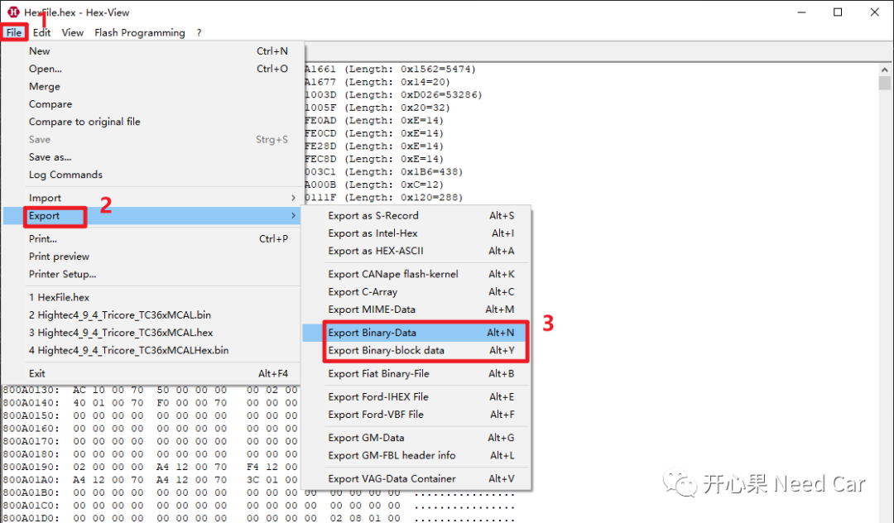
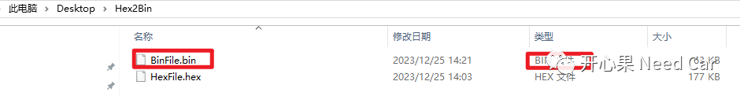
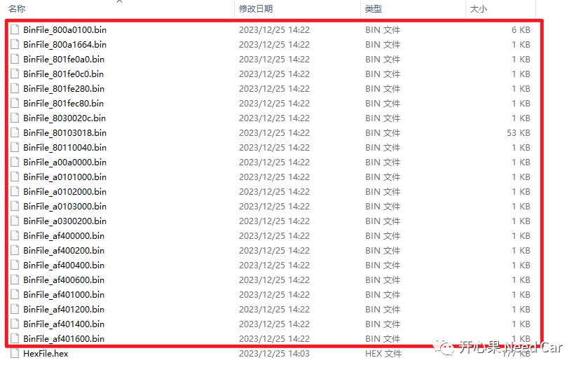
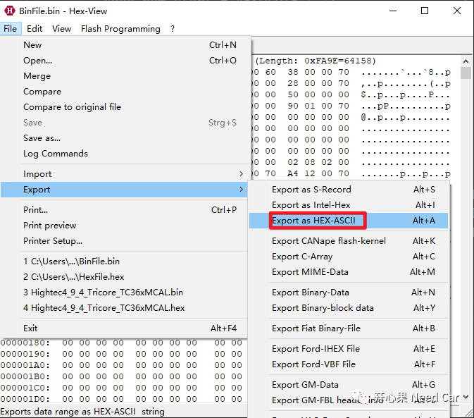
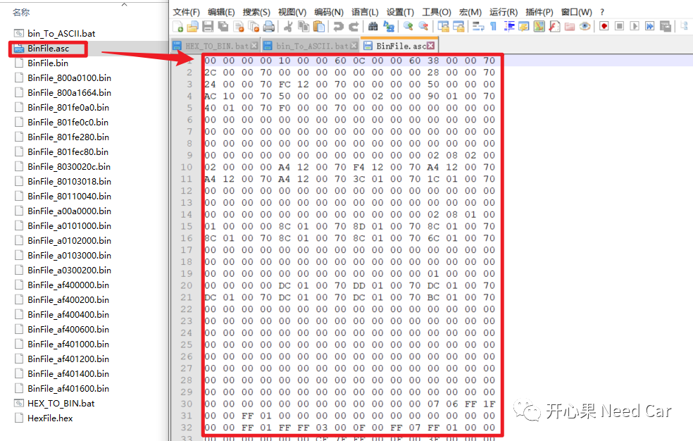
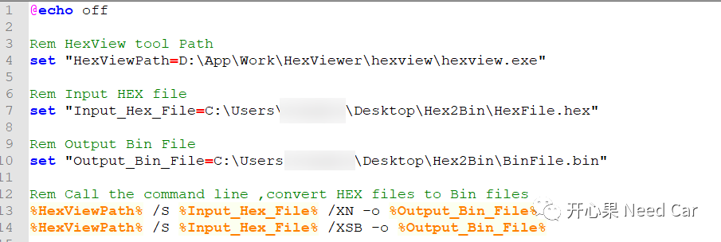
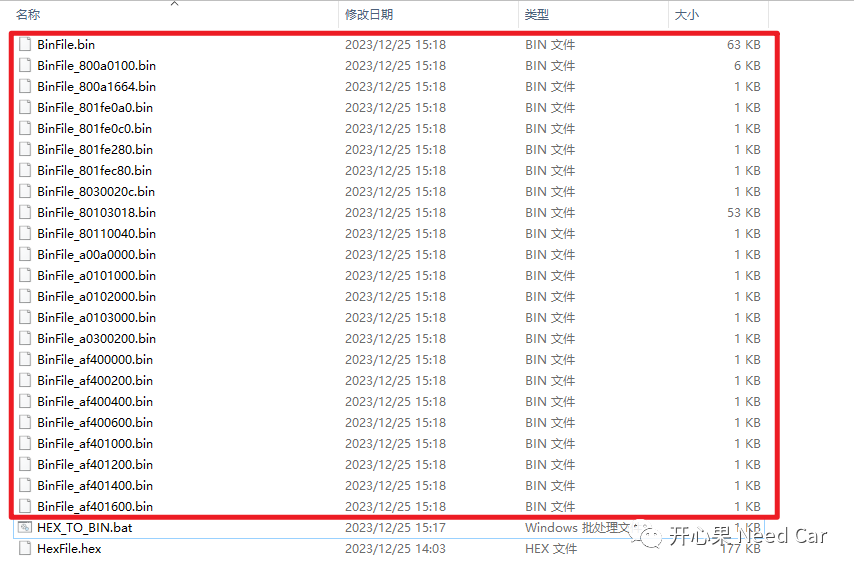

开心果 Need Car · 2023-12-29T07:15:00+08:00 · 微信原文
在工程开发过程中，在不同的场景需要使用不同格式的二进制文件。有时，可能会遇到这样的需求：*.hex文件转换成*.bin文件格式或者其他格式文件。本文，基于HexView，讨论一下*.hex文件转换成*.bin文件操作。
1、使用HexView将*.hex文件转换成*.bin文件





2、使用批处理文件（*.bat）调用HexView
@echo offRem HexView tool Pathset "HexViewPath=D:\App\Work\HexViewer\hexview\hexview.exe"Rem Input HEX fileset "Input_Hex_File=..\Desktop\Hex2Bin\HexFile.hex"Rem Output Bin Fileset "Output_Bin_File=..\Desktop\Hex2Bin\BinFile.bin"Rem Call the command line ,convert HEX files to Bin files%HexViewPath% /S %Input_Hex_File% /XN -o %Output_Bin_File%%HexViewPath% /S %Input_Hex_File% /XSB -o %Output_Bin_File%
其中，文件的输入/输出路径可以设置成绝对路径，如下所示：


命令解释：
/S：静默运行HexView
/XN ：以binary格式（*.bin）输出
/XSB：以binary格式按照段输出
更多使用命令，可以参考HexView使用手册。
ReferenceManual_HexView.pdf
往期精彩回顾